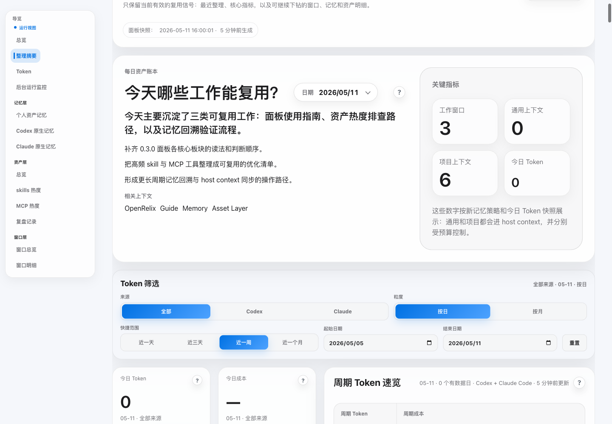
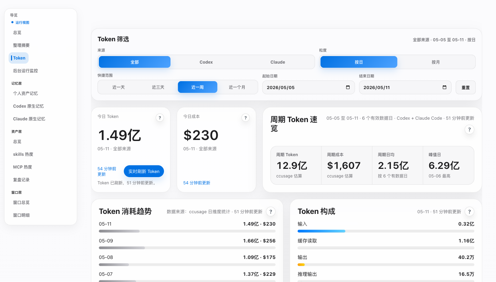
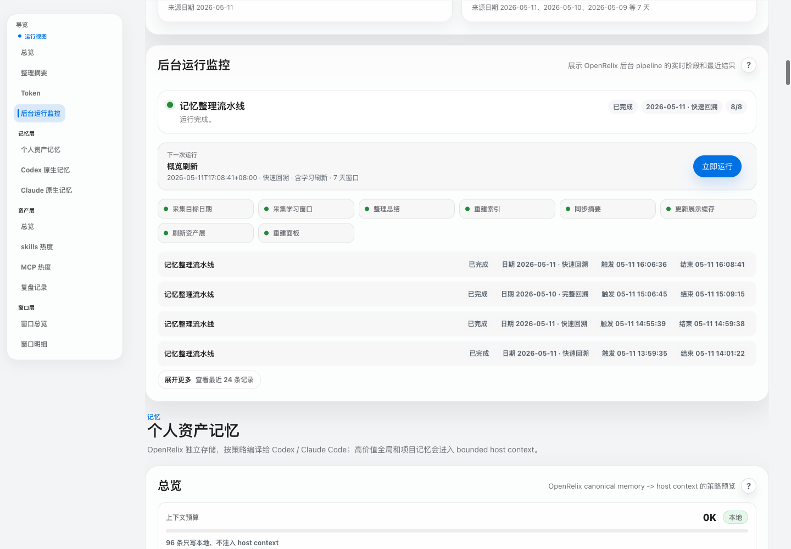
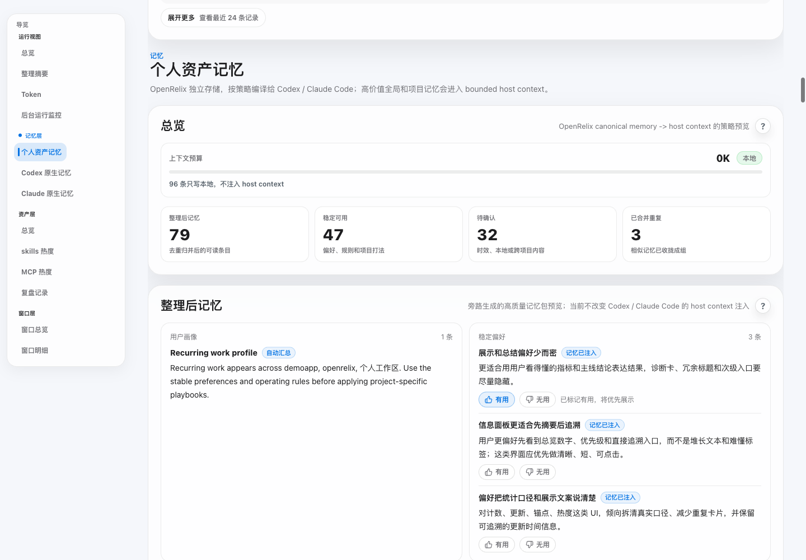
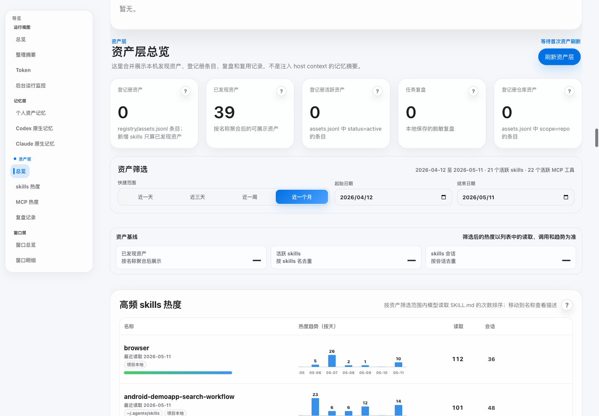
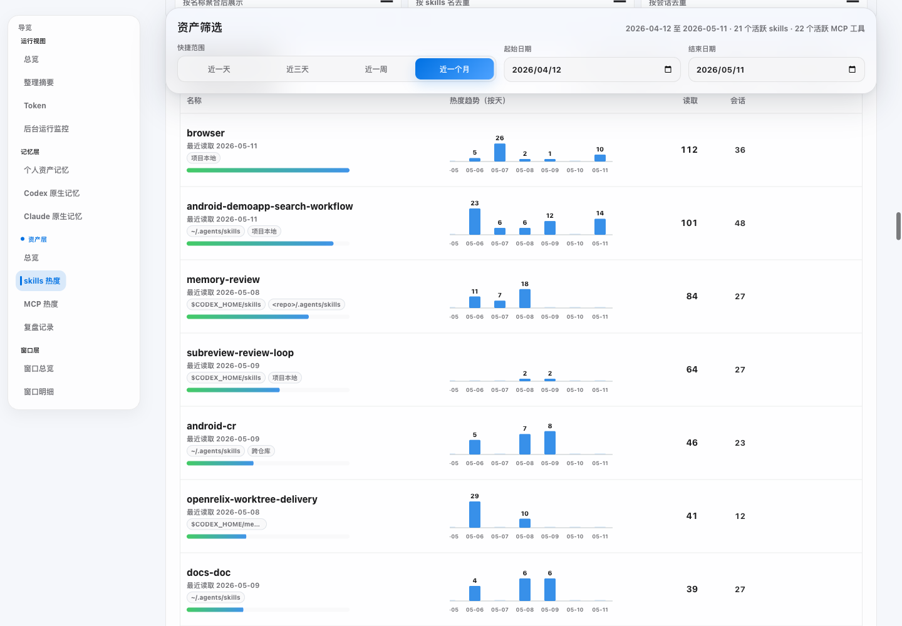
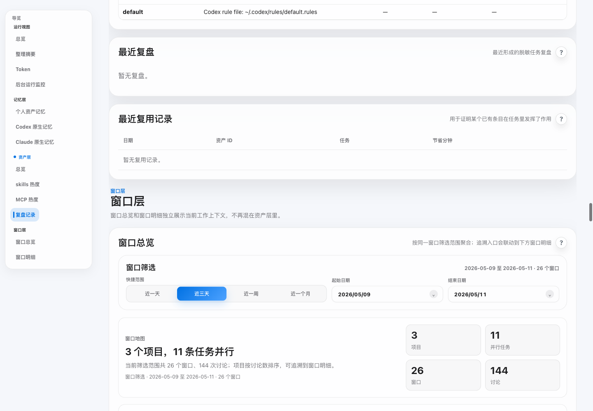
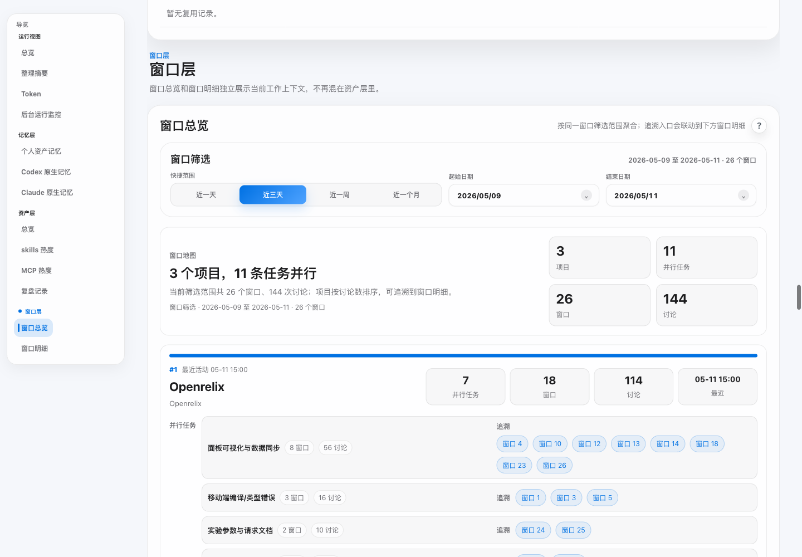
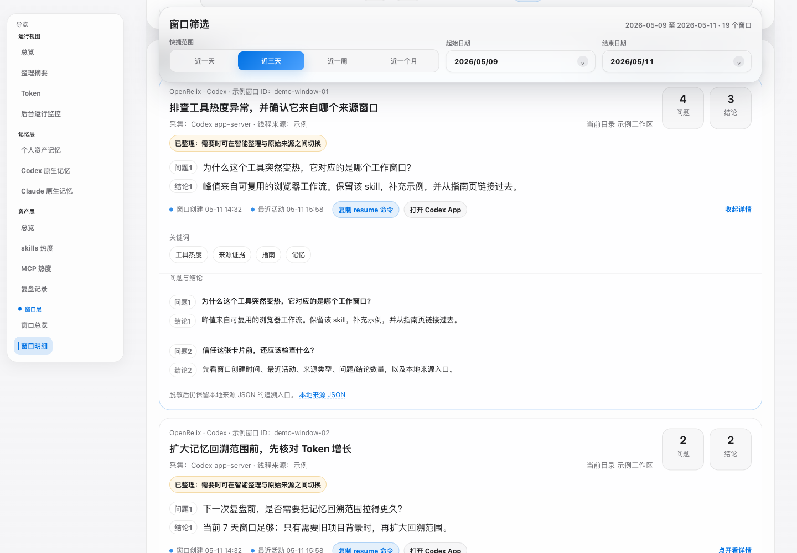

当前快照可靠吗？
先看快照时间、每日资产账本、Token 筛选和后台流水线，再读结论。
查看运行视图这份指南按面板的真实工作流来读：先看运行视图，再看记忆层、资产层、工具热度，最后用复盘和窗口层追证据。
先看快照时间、每日资产账本、Token 筛选和后台流水线，再读结论。
查看运行视图先看个人资产记忆，再对比 Codex / Claude 原生记忆和反馈按钮效果。
查看记忆层区分手动登记资产与自动发现的 skills、提示词、Rules、插件和启动项。
查看资产层用 skill 和 MCP 工具热度决定哪些能力值得补文档、模板或清理。
查看工具热度复盘记录和复用事件能证明 playbook、skill、template 或 checklist 是否真的产生并复用。
查看复盘先用窗口总览定位，再进窗口明细追证据，避免逐条翻原始会话。
查看窗口层运行视图把工作台顶部、每日资产账本、Token 筛选和后台流水线放在一起，回答一个问题：当前面板是否值得继续读。

Token 模块用来看本机使用趋势，不是账单页；把它当成 Codex / Claude Code 活动的成本和压力信号。

当面板看起来过旧、记忆没有出现，或者你想确认定时刷新是否真的跑过，就看后台运行监控。

这里是管理 OpenRelix 个人资产记忆的主入口：看哪些记忆被生成、哪些有用、哪些该隐藏，以及哪些可能进入 host context。

openrelix mode off
原生记忆视图是对照视图。它帮助你看清 host 自己能直接读到什么，以及 OpenRelix 个人资产记忆在哪些地方只是本地补充。
资产层不是记忆注入层，而是可复用材料盘点：登记册资产、已发现资产、复盘、复用事件和仓库范围资产都在这里看。

工具热度展示 skills 和 MCP 工具的真实使用信号。用它决定哪些能力值得补文档、模板、示例，哪些该清理。

复盘记录不是原始日志，而是资产化入口。它展示哪些任务产出了稳定 playbook、skill、template、automation 或 checklist。

窗口层是证据层。先用窗口总览定位项目和任务；只有需要原始证据时，再打开窗口明细。

窗口明细用于核验，不是每天逐条浏览。只有想知道某条记忆、复盘或工具热度信号为什么出现时，再进入这里。

OpenRelix 最好用的方式，是让例行任务做重复工作；你只在要复盘、升级资产或排障时介入。
先确认快照时间、后台状态和 Token 压力，再解读记忆或资产结论。
去运行视图如果产出了方法、清单、模板或排障路径，趁上下文还新鲜时沉淀。
去复盘记录记忆或资产结论不对时，先看流水线，再追原始窗口。
去后台监控OpenRelix 之后读取本地保存的 host 活动；你不需要把每段对话另存到别的工具里。
当任务产出了方法手册、skill、模板、自动化、检查清单或稳定排障路径时，用 memory-review 复盘。
memory-review
overview LaunchAgent 默认每 60 分钟刷新面板。安装完成后，用 schedule 直接调整已安装的 LaunchAgent 间隔。
openrelix schedule --overview-refresh-interval-minutes 30
默认 23:00 生成当天预览，00:10 生成前一日终版。安装完成后，用 schedule 直接调整这两个 LaunchAgent 时间。
openrelix schedule --nightly-organize-time 22:30 --nightly-finalize-time 01:00
目标是少猜。下面这些检查能把第一轮排障收在本机、收在具体链路上。
先跑 app-server 检查；如果 Codex app-server 不可用，OpenRelix 应尽量回退到 history/session。
再看后台监控openrelix doctor --app-server-check
学习刷新依赖配置好的 model CLI；改记忆设置前先确认模型链路能跑。
再看记忆导览openrelix doctor --model-check
当 npm 包已是最新但 app、LaunchAgent 或面板像是旧的，走 force 修复路径。
再看运行视图openrelix update --yes --force
夜间预览默认 23:00，面板刷新默认 60 分钟。默认节奏不适合时，从日常使用里的指令调整。
查看定时指令